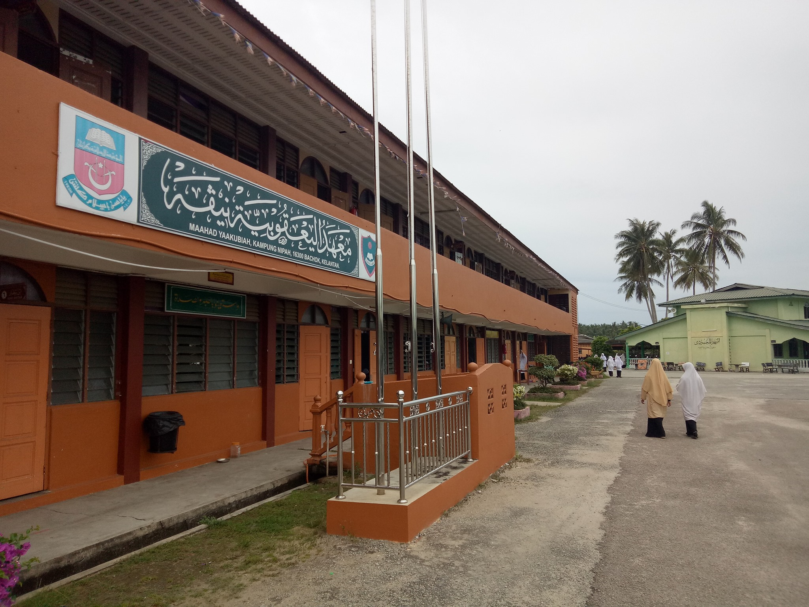
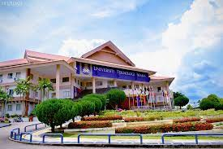
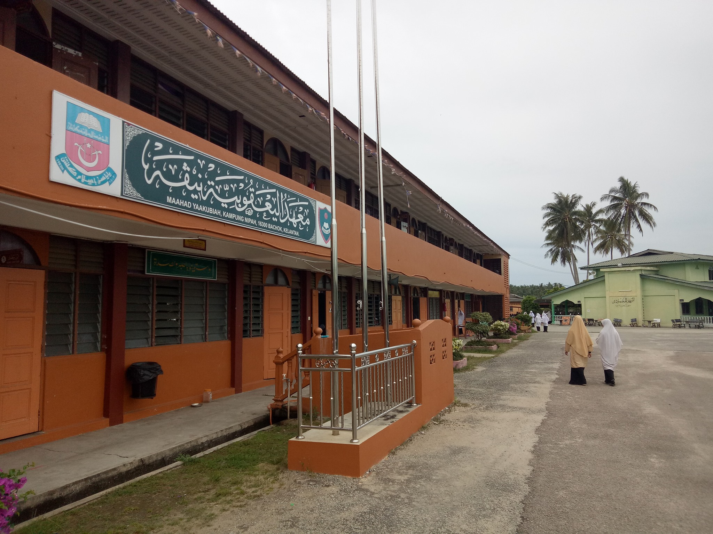
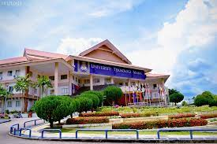

|
Sekolah Kebangsaan Kandis |  | Maahad Yaakubiah Nipah |  | Universiti Teknologi Mara UiTM (Kelantan) |
|
Sekolah Kebangsaan Kandis |  | Maahad Yaakubiah Nipah |  | Universiti Teknologi Mara UiTM (Kelantan) |
| 2007-2013 | Sekolah Kebangsaan Kandis |
| 2014-2018 | Maahad Yaakubiah Nipah |
| 2019 until now | Universiti Teknologi Mara UiTM (Kelantan) |